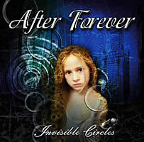
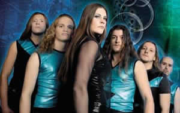

Entrevista
de Floor Jansen à And Heavy Metal For All
Vocês chegaram ao quarto trabalho com o disco Invisible Circles. Musicalmente, o que diferencia este dos demais álbuns? Invisible Circles é nosso terceiro disco completo e nosso álbum mais metal! A música é mais bem estruturada, porém complicada e uso mais minha voz, está mais na frente. Todo o trabalho tem o mesmo conceito.
No ano passado foi lançado o mini-álbum Exordium, que serviu como preparação para o novo lançamento. Conte-nos sobre este disco. Por que não foi gravado um álbum completo na época? Ele é um álbum completo, porém não muito extenso. Melhorou-se muito o disco e algumas coisas para dar aos fãs, como sons extras, por isso a demora do nosso terceiro disco.
O Iron Maiden é uma das grandes influências do conjunto e vocês acabaram incluindo o cover de The Evil That Man Do em Exordium. Por quê? Porque amamos essa música. Tocamos ao vivo e muitas pessoas começaram a perguntar porque não a gravávamos, então decidimos fazer isso!
Para o lugar do guitarrista Mark Jansen, que deixou o conjunto, foi efetivado o roadie Bas Maas, que estreou nestes trabalhos. Por que optaram por ele? Porque ele é um grande guitarrista e tem uma grande performance.
Em dezembro agora e fevereiro do ano que vem, o After Forever irá tocar ao lado do Nightwish. Serão duas noites com os dois maiores nomes do metal da atualidade. Qual é a expectativa para estas apresentações? Realmente eu espero por isso! Sempre é um grande prazer tocar com eles! Nos damos muito bem!
Falando nisso, nos últimos anos houve uma grande explosão de bandas fazendo gothic metal, talvez pelo sucesso desses dois conjuntos. O que acha disso? Você acredita que isso poderá saturar o mercado? Admiro quando eventualmente quebram tradi-ções. Não tenho em mente o porque que esse excesso não seja bom para muitas bandas. O After Forever nunca amadureceu tanto com isso, porém agora de fato há muitos grupos e nem todos são bons, isso que é saturação e me deixa receosa.
Existe alguma previsão de vinda do After Forever ao Brasil? Quando poderemos assistir a uma performance da banda ao vivo? Sim! Estamos esperando tocar no Brasil no verão de 2005 (nosso inverno). Ainda não é certeza, mas esperamos que sim!
Em relação ao futuro, quais são os planos do After Forever? Vamos começar a gravar o novo disco em 2005 e esperamos estar com ele pronto no final do ano. Nós estamos em uma turnê que está indo bem!
Gostaríamos de agradecer pela entrevista e pedir para que deixe uma mensagem aos seus fãs e visitantes do site. Espero estar com vocês em breve!
Extraída de www.andheavymetalforall.com.br
|